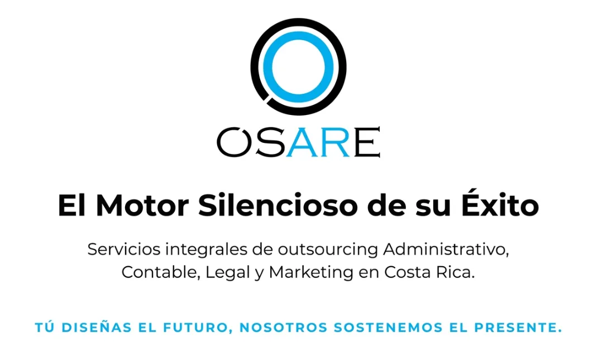
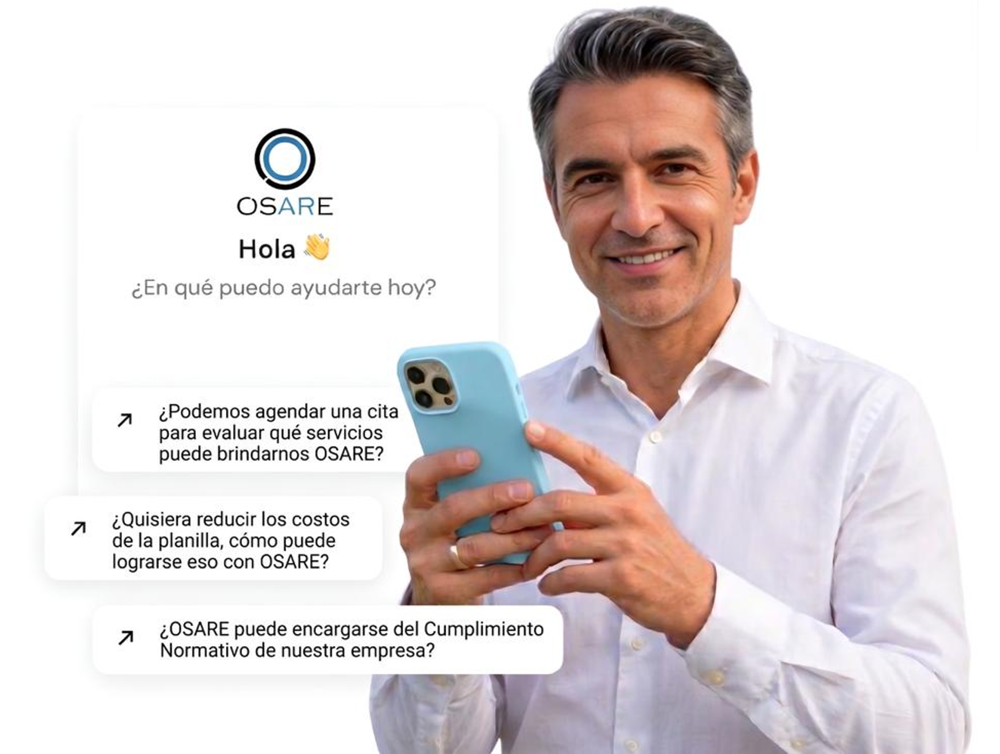

Haz crecer tu PyMES
Crecimiento Estratégico
En OSARE CR somos su aliado estratégico en soluciones de Outsourcing en Costa Rica. Ofrecemos consultoría estratégica en sistemas y procesos con el Método OSARE.
Blindaje operativo para PYMES y marcas personales: garantizamos su seguridad jurídica con respaldo legal y laboral integrado en cada servicio.
Potenciamos negocios mediante servicio integrales de:
- Gestión Empresarial
- Contabildad
- Asesoría Legal
- Gestión de Nóminas
- Marketing Digital y Branding
Nuestro enfoque de BPO (Business Process Outsourcing) le permite delegar procesos críticos como el cumplimiento Normativo, las Obligaciones Tributarias, el Branding y RRSS, para que usted se enfoque en hacer crecer su negocio.
"Protegemos su legado"
